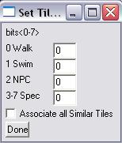

<html xmlns:v="urn:schemas-microsoft-com:vml"
xmlns:o="urn:schemas-microsoft-com:office:office"
xmlns:w="urn:schemas-microsoft-com:office:word"
xmlns="http://www.w3.org/TR/REC-html40">

<head>
<meta http-equiv=Content-Type content="text/html; charset=us-ascii">
<meta name=ProgId content=Word.Document>
<meta name=Generator content="Microsoft Word 11">
<meta name=Originator content="Microsoft Word 11">
<link rel=File-List href="Set_Tile_attribute_files/filelist.xml">
<link rel=Edit-Time-Data href="Set_Tile_attribute_files/editdata.mso">
<!--[if !mso]>
<style>
v\:* {behavior:url(#default#VML);}
o\:* {behavior:url(#default#VML);}
w\:* {behavior:url(#default#VML);}
.shape {behavior:url(#default#VML);}
</style>
<![endif]-->
<title>OpenLibrary</title>
<!--[if gte mso 9]><xml>
 <o:DocumentProperties>
  <o:Author>name</o:Author>
  <o:Template>Normal</o:Template>
  <o:LastAuthor>name</o:LastAuthor>
  <o:Revision>2</o:Revision>
  <o:TotalTime>43</o:TotalTime>
  <o:Created>2005-10-11T09:56:00Z</o:Created>
  <o:LastSaved>2005-10-11T09:56:00Z</o:LastSaved>
  <o:Pages>1</o:Pages>
  <o:Words>103</o:Words>
  <o:Characters>591</o:Characters>
  <o:Lines>4</o:Lines>
  <o:Paragraphs>1</o:Paragraphs>
  <o:CharactersWithSpaces>693</o:CharactersWithSpaces>
  <o:Version>11.5606</o:Version>
 </o:DocumentProperties>
</xml><![endif]--><!--[if gte mso 9]><xml>
 <w:WordDocument>
  <w:SpellingState>Clean</w:SpellingState>
  <w:GrammarState>Clean</w:GrammarState>
  <w:ValidateAgainstSchemas/>
  <w:SaveIfXMLInvalid>false</w:SaveIfXMLInvalid>
  <w:IgnoreMixedContent>false</w:IgnoreMixedContent>
  <w:AlwaysShowPlaceholderText>false</w:AlwaysShowPlaceholderText>
  <w:Compatibility>
   <w:UseFELayout/>
  </w:Compatibility>
  <w:BrowserLevel>MicrosoftInternetExplorer4</w:BrowserLevel>
 </w:WordDocument>
</xml><![endif]--><!--[if gte mso 9]><xml>
 <w:LatentStyles DefLockedState="false" LatentStyleCount="156">
 </w:LatentStyles>
</xml><![endif]-->
<style>
<!--
 /* Font Definitions */
 @font-face
	{font-family:Wingdings;
	panose-1:5 0 0 0 0 0 0 0 0 0;
	mso-font-charset:2;
	mso-generic-font-family:auto;
	mso-font-pitch:variable;
	mso-font-signature:0 268435456 0 0 -2147483648 0;}
@font-face
	{font-family:"MS Mincho";
	panose-1:2 2 6 9 4 2 5 8 3 4;
	mso-font-alt:"\FF2D\FF33 \660E\671D";
	mso-font-charset:128;
	mso-generic-font-family:modern;
	mso-font-pitch:fixed;
	mso-font-signature:-1610612033 1757936891 16 0 131231 0;}
@font-face
	{font-family:"\@MS Mincho";
	panose-1:2 2 6 9 4 2 5 8 3 4;
	mso-font-charset:128;
	mso-generic-font-family:modern;
	mso-font-pitch:fixed;
	mso-font-signature:-1610612033 1757936891 16 0 131231 0;}
 /* Style Definitions */
 p.MsoNormal, li.MsoNormal, div.MsoNormal
	{mso-style-parent:"";
	margin:0in;
	margin-bottom:.0001pt;
	mso-pagination:widow-orphan;
	font-size:12.0pt;
	font-family:"Times New Roman";
	mso-fareast-font-family:"MS Mincho";}
a:link, span.MsoHyperlink
	{color:#009999;
	text-decoration:underline;
	text-underline:single;}
a:visited, span.MsoHyperlinkFollowed
	{color:#006666;
	text-decoration:underline;
	text-underline:single;}
p
	{mso-margin-top-alt:auto;
	margin-right:0in;
	mso-margin-bottom-alt:auto;
	margin-left:0in;
	mso-pagination:widow-orphan;
	font-size:12.0pt;
	font-family:"Times New Roman";
	mso-fareast-font-family:"MS Mincho";}
span.SpellE
	{mso-style-name:"";
	mso-spl-e:yes;}
span.GramE
	{mso-style-name:"";
	mso-gram-e:yes;}
@page Section1
	{size:595.3pt 841.9pt;
	margin:1.0in 1.25in 1.0in 1.25in;
	mso-header-margin:.5in;
	mso-footer-margin:.5in;
	mso-paper-source:0;}
div.Section1
	{page:Section1;}
 /* List Definitions */
 @list l0
	{mso-list-id:1948737037;
	mso-list-type:hybrid;
	mso-list-template-ids:-1953078790 -1686045694 134807555 134807557 134807553 134807555 134807557 134807553 134807555 134807557;}
@list l0:level1
	{mso-level-start-at:0;
	mso-level-number-format:bullet;
	mso-level-text:\F0B7;
	mso-level-tab-stop:.5in;
	mso-level-number-position:left;
	text-indent:-.25in;
	font-family:Symbol;
	mso-fareast-font-family:"MS Mincho";
	mso-bidi-font-family:"Times New Roman";}
ol
	{margin-bottom:0in;}
ul
	{margin-bottom:0in;}
-->
</style>
<!--[if gte mso 10]>
<style>
 /* Style Definitions */
 table.MsoNormalTable
	{mso-style-name:"Table Normal";
	mso-tstyle-rowband-size:0;
	mso-tstyle-colband-size:0;
	mso-style-noshow:yes;
	mso-style-parent:"";
	mso-padding-alt:0in 5.4pt 0in 5.4pt;
	mso-para-margin:0in;
	mso-para-margin-bottom:.0001pt;
	mso-pagination:widow-orphan;
	font-size:10.0pt;
	font-family:"Times New Roman";
	mso-fareast-font-family:"Times New Roman";
	mso-ansi-language:#0400;
	mso-fareast-language:#0400;
	mso-bidi-language:#0400;}
table.MsoTableGrid
	{mso-style-name:"Table Grid";
	mso-tstyle-rowband-size:0;
	mso-tstyle-colband-size:0;
	border:solid windowtext 1.0pt;
	mso-border-alt:solid windowtext .5pt;
	mso-padding-alt:0in 5.4pt 0in 5.4pt;
	mso-border-insideh:.5pt solid windowtext;
	mso-border-insidev:.5pt solid windowtext;
	mso-para-margin:0in;
	mso-para-margin-bottom:.0001pt;
	mso-pagination:widow-orphan;
	font-size:10.0pt;
	font-family:"Times New Roman";
	mso-ansi-language:#0400;
	mso-fareast-language:#0400;
	mso-bidi-language:#0400;}
</style>
<![endif]--><!--[if gte mso 9]><xml>
 <o:shapedefaults v:ext="edit" spidmax="8194"/>
</xml><![endif]--><!--[if gte mso 9]><xml>
 <o:shapelayout v:ext="edit">
  <o:idmap v:ext="edit" data="1"/>
 </o:shapelayout></xml><![endif]-->
</head>

<body bgcolor="#FFFFDF" lang=EN-GB link="#009999" vlink="#006666"
style='tab-interval:.5in' alink="#006666">

<div class=Section1>

<p align=center style='text-align:center'><b><span style='font-size:13.5pt;
font-family:Arial'>Set Tile Attribute<o:p></o:p></span></b></p>

<blockquote style='margin-top:5.0pt;margin-bottom:5.0pt'>

<p class=MsoNormal>This option allows you to access individual bits of the map&#8217;s
map data section. The Attributes are in relation with the Tiles in the 2<sup>nd</sup>
layer (middle) map. The format for the attributes is:</p>

<table class=MsoTableGrid border=1 cellspacing=0 cellpadding=0
 style='border-collapse:collapse;border:none;mso-border-alt:solid windowtext .5pt;
 mso-yfti-tbllook:480;mso-padding-alt:0in 5.4pt 0in 5.4pt;mso-border-insideh:
 .5pt solid windowtext;mso-border-insidev:.5pt solid windowtext'>
 <tr style='mso-yfti-irow:0;mso-yfti-firstrow:yes'>
  <td width=85 valign=top style='width:64.05pt;border:solid windowtext 1.0pt;
  mso-border-alt:solid windowtext .5pt;padding:0in 5.4pt 0in 5.4pt'>
  <p class=MsoNormal style='margin-right:.5in'>Bits</p>
  </td>
  <td width=106 valign=top style='width:79.55pt;border:solid windowtext 1.0pt;
  border-left:none;mso-border-left-alt:solid windowtext .5pt;mso-border-alt:
  solid windowtext .5pt;padding:0in 5.4pt 0in 5.4pt'>
  <p class=MsoNormal style='margin-right:.5in'>Value</p>
  </td>
  <td width=276 valign=top style='width:207.0pt;border:solid windowtext 1.0pt;
  border-left:none;mso-border-left-alt:solid windowtext .5pt;mso-border-alt:
  solid windowtext .5pt;padding:0in 5.4pt 0in 5.4pt'>
  <p class=MsoNormal style='margin-right:.5in'>One possible representation</p>
  </td>
 </tr>
 <tr style='mso-yfti-irow:1'>
  <td width=85 valign=top style='width:64.05pt;border:solid windowtext 1.0pt;
  border-top:none;mso-border-top-alt:solid windowtext .5pt;mso-border-alt:solid windowtext .5pt;
  padding:0in 5.4pt 0in 5.4pt'>
  <p class=MsoNormal style='margin-right:.5in'>0</p>
  </td>
  <td width=106 valign=top style='width:79.55pt;border-top:none;border-left:
  none;border-bottom:solid windowtext 1.0pt;border-right:solid windowtext 1.0pt;
  mso-border-top-alt:solid windowtext .5pt;mso-border-left-alt:solid windowtext .5pt;
  mso-border-alt:solid windowtext .5pt;padding:0in 5.4pt 0in 5.4pt'>
  <p class=MsoNormal style='margin-right:.5in'>0 or 1<o:p></o:p></p>
  </td>
  <td width=276 valign=top style='width:207.0pt;border-top:none;border-left:
  none;border-bottom:solid windowtext 1.0pt;border-right:solid windowtext 1.0pt;
  mso-border-top-alt:solid windowtext .5pt;mso-border-left-alt:solid windowtext .5pt;
  mso-border-alt:solid windowtext .5pt;padding:0in 5.4pt 0in 5.4pt'>
  <p class=MsoNormal style='margin-right:.5in'>0 = not <span class=SpellE>walkable</span>/
  1 = <span class=SpellE>walkable</span></p>
  </td>
 </tr>
 <tr style='mso-yfti-irow:2'>
  <td width=85 valign=top style='width:64.05pt;border:solid windowtext 1.0pt;
  border-top:none;mso-border-top-alt:solid windowtext .5pt;mso-border-alt:solid windowtext .5pt;
  padding:0in 5.4pt 0in 5.4pt'>
  <p class=MsoNormal style='margin-right:.5in'>1</p>
  </td>
  <td width=106 valign=top style='width:79.55pt;border-top:none;border-left:
  none;border-bottom:solid windowtext 1.0pt;border-right:solid windowtext 1.0pt;
  mso-border-top-alt:solid windowtext .5pt;mso-border-left-alt:solid windowtext .5pt;
  mso-border-alt:solid windowtext .5pt;padding:0in 5.4pt 0in 5.4pt'>
  <p class=MsoNormal style='margin-right:.5in'>0 or 1<o:p></o:p></p>
  </td>
  <td width=276 valign=top style='width:207.0pt;border-top:none;border-left:
  none;border-bottom:solid windowtext 1.0pt;border-right:solid windowtext 1.0pt;
  mso-border-top-alt:solid windowtext .5pt;mso-border-left-alt:solid windowtext .5pt;
  mso-border-alt:solid windowtext .5pt;padding:0in 5.4pt 0in 5.4pt'>
  <p class=MsoNormal style='margin-right:.5in'>0 = not <span class=SpellE>swimmable</span>/
  </p>
  <p class=MsoNormal style='margin-right:.5in'>1 = <span class=SpellE>swimmable</span></p>
  </td>
 </tr>
 <tr style='mso-yfti-irow:3'>
  <td width=85 valign=top style='width:64.05pt;border:solid windowtext 1.0pt;
  border-top:none;mso-border-top-alt:solid windowtext .5pt;mso-border-alt:solid windowtext .5pt;
  padding:0in 5.4pt 0in 5.4pt'>
  <p class=MsoNormal style='margin-right:.5in'>2</p>
  </td>
  <td width=106 valign=top style='width:79.55pt;border-top:none;border-left:
  none;border-bottom:solid windowtext 1.0pt;border-right:solid windowtext 1.0pt;
  mso-border-top-alt:solid windowtext .5pt;mso-border-left-alt:solid windowtext .5pt;
  mso-border-alt:solid windowtext .5pt;padding:0in 5.4pt 0in 5.4pt'>
  <p class=MsoNormal style='margin-right:.5in'>0 or 1<o:p></o:p></p>
  </td>
  <td width=276 valign=top style='width:207.0pt;border-top:none;border-left:
  none;border-bottom:solid windowtext 1.0pt;border-right:solid windowtext 1.0pt;
  mso-border-top-alt:solid windowtext .5pt;mso-border-left-alt:solid windowtext .5pt;
  mso-border-alt:solid windowtext .5pt;padding:0in 5.4pt 0in 5.4pt'>
  <p class=MsoNormal style='margin-right:.5in'>1 = not NPC passable/ </p>
  <p class=MsoNormal style='margin-right:.5in'>0 = NPC passable*</p>
  </td>
 </tr>
 <tr style='mso-yfti-irow:4;mso-yfti-lastrow:yes'>
  <td width=85 valign=top style='width:64.05pt;border:solid windowtext 1.0pt;
  border-top:none;mso-border-top-alt:solid windowtext .5pt;mso-border-alt:solid windowtext .5pt;
  padding:0in 5.4pt 0in 5.4pt'>
  <p class=MsoNormal style='margin-right:.5in'>3-7</p>
  </td>
  <td width=106 valign=top style='width:79.55pt;border-top:none;border-left:
  none;border-bottom:solid windowtext 1.0pt;border-right:solid windowtext 1.0pt;
  mso-border-top-alt:solid windowtext .5pt;mso-border-left-alt:solid windowtext .5pt;
  mso-border-alt:solid windowtext .5pt;padding:0in 5.4pt 0in 5.4pt'>
  <p class=MsoNormal style='margin-right:.5in'>0 to 31</p>
  </td>
  <td width=276 valign=top style='width:207.0pt;border-top:none;border-left:
  none;border-bottom:solid windowtext 1.0pt;border-right:solid windowtext 1.0pt;
  mso-border-top-alt:solid windowtext .5pt;mso-border-left-alt:solid windowtext .5pt;
  mso-border-alt:solid windowtext .5pt;padding:0in 5.4pt 0in 5.4pt'>
  <p class=MsoNormal style='margin-right:.5in'>Special cases. E.g. warp tiles,
  swamps.</p>
  </td>
 </tr>
</table>

<p class=MsoNormal style='margin-left:.25in'>*Since a considerable amount more
tiles are probably going to be NPC passable <span class=GramE>its</span> easier
just to flag the ones that aren&#8217;t passable.</p>

<p class=MsoNormal><!--[if gte vml 1]><v:shapetype id="_x0000_t75" coordsize="21600,21600"
 o:spt="75" o:preferrelative="t" path="m@4@5l@4@11@9@11@9@5xe" filled="f"
 stroked="f">
 <v:stroke joinstyle="miter"/>
 <v:formulas>
  <v:f eqn="if lineDrawn pixelLineWidth 0"/>
  <v:f eqn="sum @0 1 0"/>
  <v:f eqn="sum 0 0 @1"/>
  <v:f eqn="prod @2 1 2"/>
  <v:f eqn="prod @3 21600 pixelWidth"/>
  <v:f eqn="prod @3 21600 pixelHeight"/>
  <v:f eqn="sum @0 0 1"/>
  <v:f eqn="prod @6 1 2"/>
  <v:f eqn="prod @7 21600 pixelWidth"/>
  <v:f eqn="sum @8 21600 0"/>
  <v:f eqn="prod @7 21600 pixelHeight"/>
  <v:f eqn="sum @10 21600 0"/>
 </v:formulas>
 <v:path o:extrusionok="f" gradientshapeok="t" o:connecttype="rect"/>
 <o:lock v:ext="edit" aspectratio="t"/>
</v:shapetype><v:shape id="_x0000_i1025" type="#_x0000_t75" style='width:115.5pt;
 height:135.75pt'>
 <v:imagedata src="Set_Tile_attribute_files/image001.jpg" o:title="set_attribute"/>
</v:shape><![endif]--><![if !vml]><![endif]></p>

<p class=MsoNormal>The &#8220;Associate all Tiles&#8221; will make all similar
tiles to share the same attribute.</p>

<p class=MsoNormal><o:p>&nbsp;</o:p></p>

<p class=MsoNormal style='text-align:justify;text-justify:inter-ideograph'><span
style='font-size:10.0pt;font-family:Arial'><o:p>&nbsp;</o:p></span></p>

</blockquote>

<p class=MsoNormal align=center style='text-align:center'><span
style='font-size:10.0pt;font-family:Arial'><a href="index.html">Index</a> <o:p></o:p></span></p>

</div>

</body>

</html>
